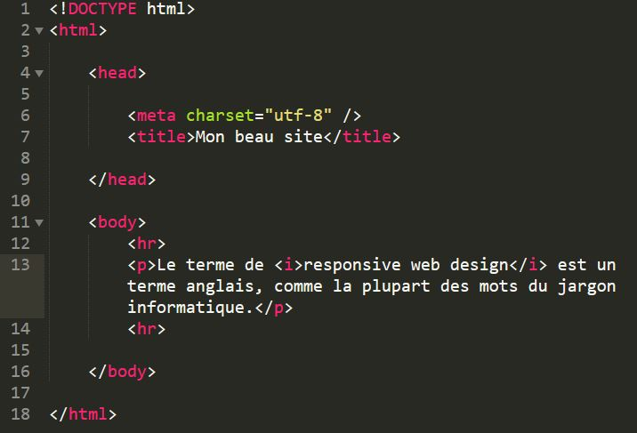
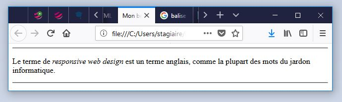

La balise ‹i› est un élément in-line qui met la partie de texte entre sa balise d'ouverture et sa balise de fermeture en italique.
Exemple :
Des balises i sont placées de chaque côté de l'expression que je veux mettre en italique.

Les mots placés entre la balise sont en italique par défaut.
